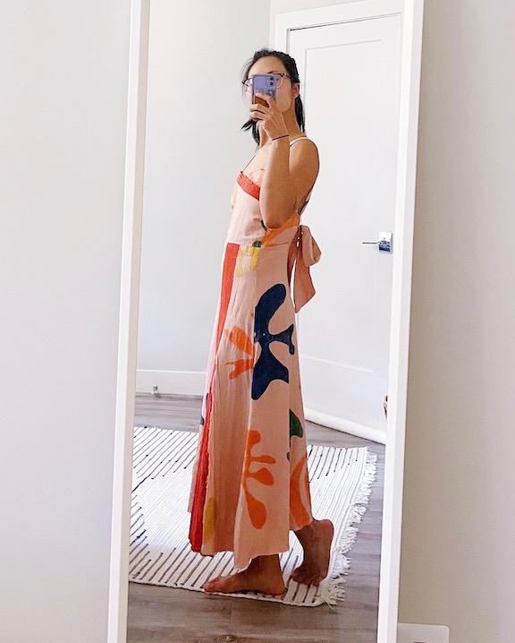

Sewing Projects
I lived with two wonderful friends in 2021, but they both got engaged and moved out! I was left with two wedding invites and no dresses to wear for them. Introducing my sewing phase. I already knew the basics of sewing from taking "Family and Consumer Sciences" in middle school, and now was the time to put my rudimentary skills to the test with custom dresses!
The Test Piece: a fancy painter's jumpsuit
I purchased a pattern for my first project since the only wearable I had created prior to this was my middle school pajama pants. I bought a Criss-Cross Halter Jumpsuit pattern (V9259) from Vogue and followed the instructions for what should have been my size pattern. For this piece, I used Jacquard fabric paint to make thick stripes in a fun, spring color palette. I quickly discovered that my proportions don't quite match Vogue's sizing chart, so I learned how to adjust a pattern to reduce gaping and make a better fit! This project taught me basic construction techniques, how to add pockets (very important for women's clothing!) and gave me the confidence that I could probably turn the ideas in my head into wearabble clothing.

The Cocktail Dress: structural yet flowy
My first custom dress! I wanted something yellow, something structural / Kimono-inspired (which I think suits me best), and something that would move as I walked (for that fun flow). Oh, also a bow because I love how bows give a nice feminine touch. I wanted the flaps at the front to move, and I wanted them to be connected to the bow in the back to form one continous line. I accidentally cut the dress too short and I didn't do the best job sewing satin (there's a lot of bunching), but that's a lesson for next time.

The Tree Dress: a sustainably made ball gown
I'm big into reducing, reusing and upcycling, and I wanted to make my biggest dress as sustainably as possible. I only used discarded fabric at fabric stores (which was more cost-effective too), reused buttons and leftover paint from an old project. I got lucky in finding a couple yards of a brown-ish orange fabric and decided to paint a tree / topography map pattern (to really lean into the sustainability theme). I learned ruching techniques for the back and added two large pockets to make up for the fact that I don't have a purse. Love how this one turned out!


The Matisse Dress: taking vintage garden party to the next level
The title says it all - the second wedding was "vintage garden party"-themed, and I interpreted that to mean (vintage?) Matisse flowers. By this time I felt like a pattern-making veteren. I drew an idea, cut out test pieces, made sure they fit me, made necessary adjustments, and then created the dress out of a flowy linen-blend fabric! I then realized the dress photographed white, which is a no-no for weddings, so I threw the whole thing in a Rit Rose Quartz dye bath and now it's pink! This whole project took just a weekend and I really love how the open back (and the bow!) turned out.




The Gold Dress: a fitted formal gown with a little
bit of sass
I created a gold dress for the 1920's themed
company holiday party. I wanted some sassy cutouts while still keeping
the dress classy and company event-appropriate, so we've got a small peek of
ab and and healthy peek of back :D Complete with a matching gold bowtie for Shep!!


Previous Project
Punch Needling
Next Project
Ode to Metro